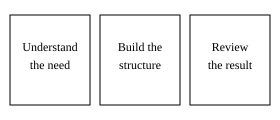

Esports Model Grader
A project exploring how player statistics, recent form, and matchup context can be organized for review. Its data limitations matter as much as its interface.
Computer science student at UC San Diego, exploring websites and data tools that help people find information and make sense of it.
If you are planning a website or a practical tool, start with my project examples, then tell me about your idea.
A project exploring how player statistics, recent form, and matchup context can be organized for review. Its data limitations matter as much as its interface.

I start with the intended user and a concrete task. Then I organize the content and build a small version that can be reviewed.
A useful first conversation starts with the problem. Tell me what your visitors need to accomplish, what content you already have, and what is currently difficult.
Learn about my background and project process, or see how music and community influence the way I learn.